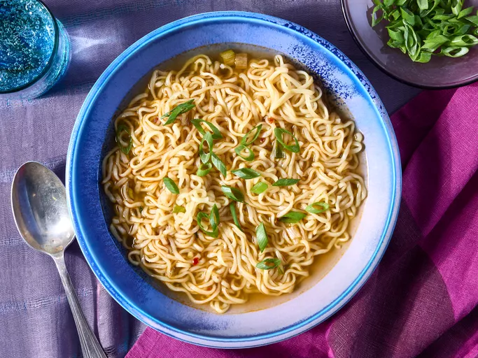

Ramen Noodle Soup

Description
This savory ramen soup is easy to make, ready in a flash, and very, very good! I like to add
ginger, soy sauce, sesame and chili oil for a delicious flavor.
(excerpt from allrecipes.com)
Ingredients (Original Recipe)
- 3 ½ cups of vegetable broth
- 1 (3 ½ ounce) package ramen noodles wih dried vegetables
- 2 teaspoons of soy sauce
- ½ teaspoons of chili oil
- ½ teaspoons of minced fresh ginger root
- 1 teaspoon sesame oil
- 2 green onions, sliced
Steps
- Gather the ingredients
- Combine broth and noodles in a medium saucepan; cover and bring to a boil
over high heat, stirring to break up noodles.
- Reduce heat to medium and add soy sauce, chili oil, and ginger. Simmer,
uncovered, for 10 minutes.
- Stir in sesame oil
- Garnish with green onions and serve
Home